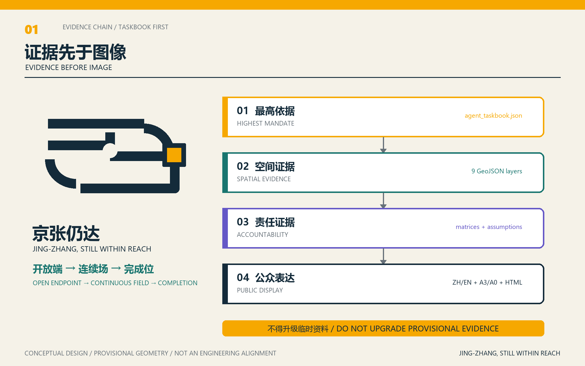
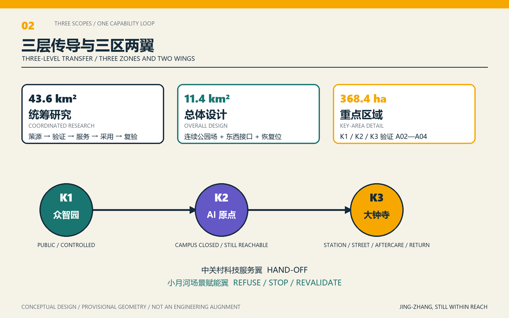
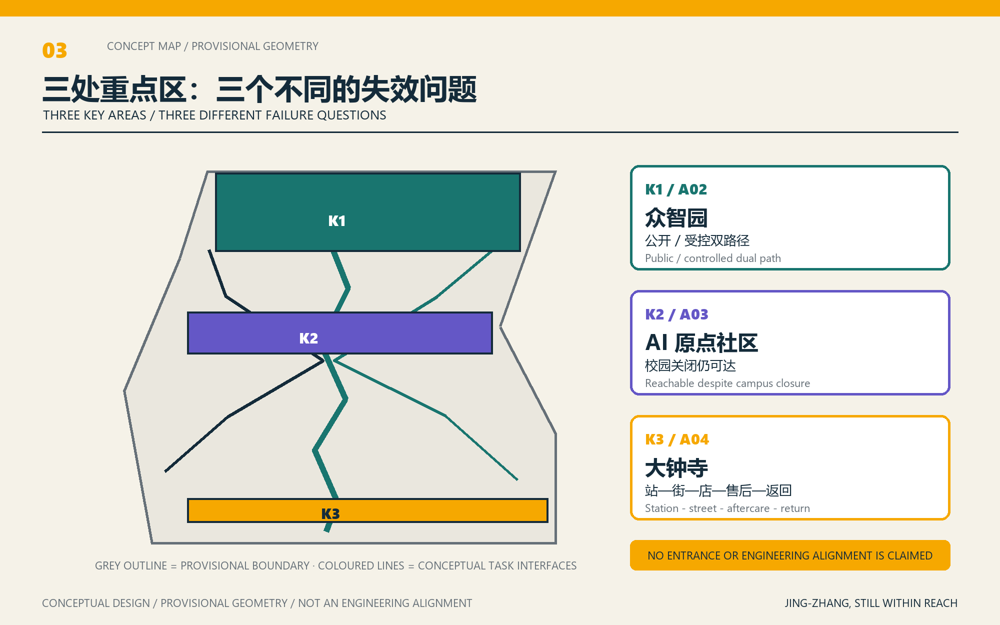
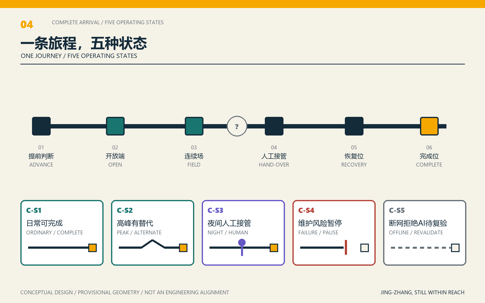
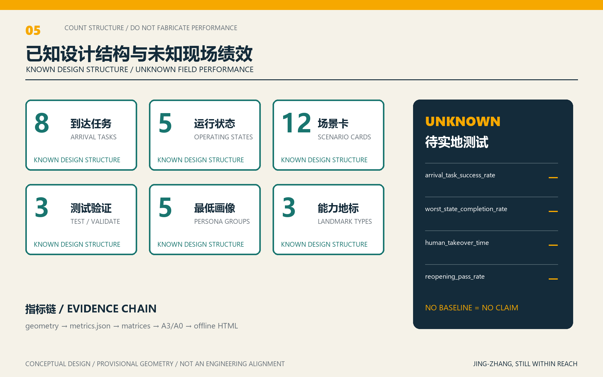

京张仍达｜无单点失效的城市能力到达系统
以八项完整到达任务和五种运行状态检验京张公共价值：道路、站口、围墙、时段、设备或 AI 均不得成为公共能力消失的唯一故障点。全部空间落地为基于 provisional boundary 的概念建议，待官方资料后整包复算。
京张仍达｜无单点失效的城市能力到达系统
设计依据与资料清单
本方案以 brief/site-package/agent_taskbook.json 为最高设计任务依据，并以北京市规划和自然资源委员会海淀分局发布的《百年京张AI创新带城市设计国际方案征集资格预审公告》确认三层范围和专业任务。方案不把“连续”理解为画出一条更长的绿线，而把它变成可由真实使用者检验的城市能力：道路、站口、电梯、围墙、入口、开放时段、组织转接或数字系统，都不得成为公共价值消失的唯一故障点 来源 来源 深度。
因此，京张连续性的验收对象不是一张效果图，而是 A01—A08 八项完整到达任务在日常、高峰/活动、夜间、维护/故障、断网/停电/拒绝 AI 五种状态下能否完成。每项任务均要有提前判断面、连续过渡面、恢复位、无 AI 基线、责任类型、停止条件与复开证据。GeoJSON、指标、矩阵、A3/A0 和离线 HTML 分别保存其空间、复算、责任和表达证据；A01—A08、场景卡与状态—责任表均直接写入本主稿，避免把核心设计隐藏在旁支文件。
方案不是独立愿景文本，而是从公告、面向智能体任务书和场地资料出发组织成果；本节只把最关键依据放在判断旁边 来源 来源 深度。完整来源和标准覆盖分别保存在 sources.json、standard_matrix.json 与 design_depth_matrix.json，不在正文重复机器索引。
资料登记表的使用边界如下 来源：
- data/source_registry.json 登记公开、清权与临时资料的用途边界。
- 当前登记摘要：formal 可用资料 7 条，背景资料 1 条，provisional-only 资料 1 条。
- agent 不得把 background_only 或 provisional_only 资料升级为 official boundary、法定控规、正式评分依据或政府实施承诺。
data/processed/agent_fact_pack.md 是本方案的阅读导航层，不是新的权威来源 来源。它帮助 agent 把三层范围、三处重点区、公告任务、agent.1-agent.6、资料可用性和缺资料事项组织成可读方案；事实判断仍需回到已登记的原始材料 来源 来源，完整来源关系由 sources.json 保存。

本脚手架在官方 SITE_BOUNDARY 或三处 KEY_AREA 尚未取得时，使用 brief/site-package/geometry/provisional_boundaries.geojson 生成临时 formal 包。提交包中的 geometry/site_boundary.geojson 与 geometry/key_areas.geojson 均必须标注为 provisional_constraint、official_boundary=false，只能用于方案生成、自检、可视化和设计讨论，不能作为 official redline、审批依据、精确面积依据或法定控制结论。该组织方数据缺口本身不阻断内容评分；替换 official polygons 后，site boundary、key areas、land use、roads、green space、public space、buildings、phasing 和 metrics 均需重算。
本次包的边界状态为：临时边界，保留精度警示并待正式数据发布后整包复算。Issue #846 指出临时总体范围与 OSM 所绘遗址公园存在背景定位差异，Issue #1029 指出 PROV-KEY-003 的位置亦待核实；这些线索不把 OSM 升级成边界，也不阻断内容评分，但要求图面避免把临时矩形当成正式城市结构。当前几何的面积、绿地率、公共空间率和建筑基底只说明脚手架图层可复算，不是现状事实或审定指标 来源 指标 深度。
边界解释可回到总体范围图层和面积复算 空间数据 指标。三处重点区则由独立图层和数量指标核对 空间数据 指标。这意味着读者可以从正文进入证据，但不必先读一串机器编号。
三层范围工作框架
方案按照公告确定的三个层次组织工作：统筹研究范围关注 43.6 平方公里的AI产业生态、战略定位、创新链和未来城市形态；总体设计范围关注 11.4 平方公里京张遗址公园周边 1-2 公里城市地区和产业区，要求形成城市更新总体框架、产业空间布局、交通市政支撑和城市风貌控制；重点区域范围关注 368.4 公顷三处详细设计地区，要求明确功能业态、建筑规模、拆改留分类、公共空间连通和交通组织。三层范围在 compliance_matrix.json 中逐条映射，保证公告 1.3、1.4、1.5 与 agent.1-agent.6 的必选任务都有章节、图层、指标、图纸和 HTML 证据。
三层工作框架的深度项由 深度 和 深度 约束，空间证据以 空间数据 与 空间数据 为准，任务依据以 标准 为准，范围索引以 来源 中 project_scope_summary.csv 的三层范围表为导航。

三层工作不是互相割裂的图纸集合。统筹研究决定产业链和城市形态判断，总体设计把判断落实到更新项目、空间结构和设施承载，重点区域详细设计验证具体地块、建筑、交通、公共空间和AI应用场景的可实施性。agent 生成方案时必须先锁定当前提交采用的 official 或 provisional 边界和约束，再生成用地、建筑、道路、绿地、公共空间、分期和AI服务节点，最后从这些图层复算指标并在正文解释哪些结论仍受 provisional boundary 限制。任何无法从结构化数据复算的面积、比例、规模或项目数量，不得写入正式结论。
总体概念定为 “京张仍达 / JING-ZHANG, STILL WITHIN REACH”：以“无单点失效的城市能力到达系统”统筹三大定位、五大功能和三区两翼。D1“开域仍达 / Open Field”把机制压缩为“开放端—连续场—完成位”；D2 不再竞争主标，而成为人工接管/公共帮助点组件；D3 成为五状态组件和 60 秒“同一旅程”表达。名称不是给传统慢行方案贴牌，而是承诺以受限较多使用者的完整任务为共同验收单位 标准 深度。
三层传导方式如下：统筹研究范围把“高校策源—全栈验证—科技服务—场景应用—公共复验”组织成能力回路；总体设计范围把回路落实为连续公园、东西接口、帮助点和恢复位；三处重点区分别验证公开/受控双路径、校园关闭仍可达、站—街—店—售后—返回完整旅程。中关村科技服务翼承担责任与资源转接，小月河场景赋能翼承担可拒绝、可停止、可复验的公共场景。
| 层级 | 设计问题 | 方案回答 | 数据落点 |
|---|---|---|---|
| 统筹研究范围 | AI产业生态和未来城市形态如何组织 | 建立“高校策源-开源协作-企业转化-公共体验-国际传播”的创新链 | compliance_matrix.json、standard_matrix.json |
| 总体设计范围 | 产业空间、城市更新、交通市政和风貌如何落图 | 用地、建筑、道路、绿地、公共空间和分期图层共同表达 | 空间数据、空间数据 |
| 重点区域范围 | 三处片区如何达到详细设计深度 | 分别提出定位、空间动作、AI场景和实施依赖 | 空间数据、空间数据、空间数据 |
统筹研究范围产业与未来城市研究
统筹研究范围的核心任务是构建世界级 AI 创新生态体系。方案应梳理海淀高校院所、头部企业、算力算法数据要素、孵化平台、上市企业、独角兽和科技服务资源，提出AI创新链、产业链、人才链和城市服务链的空间协同框架。命名方案和 logo 设计应服务于“百年京张文化带、都市AI生活体验带、AI融合创新带”的整体辨识度，不能只停留在口号，应说明与产业生态、公共空间和文化资源的关联。面向智能体任务书还要求回应“五大功能”和“三区两翼”协同，形成可继续深化的命名系统、视觉识别、总体空间结构图、场景开放和运营机制；本节必须用 来源 与 标准 标注这些要求来自 agent 开源征集任务，而不是法定规划控制。
统筹研究并不新增伪精确红线；它通过 标准 要求的城市风貌、公共空间和建筑布局统筹，回接 空间数据、空间数据 与 深度，说明产业策略最终要落到可见、可复核的空间结构。
未来城市形态研究以八类要素形成在地生态图谱：土地与公共空间、产业载体、资金与科技服务、人才与社区、算力与能源、数据与权利、场景与采购、治理与复验。众智园承担全栈验证与治理接口，AI 原点社区承担策源成果的公开转译，大钟寺承担城市采用与售后，中关村科技服务翼承担知识产权、资本、人才和转接，小月河场景赋能翼承担日常公共验证。
六个案例桥只转译机制，不照搬品牌、造型、数字或治理制度：one-north 提醒把轨道首末段、步道和公共空间作为同一到达链；Punggol Digital District 提醒把产业、大学、社区、受控试验和运营责任分层 来源 来源。
Kendall Square 提醒创新区必须以可渗透街块和公开连接回到城市；STATION F 提醒明确公开、半公开、受控与公共穿行梯度 来源 来源。Barcelona 22@ 提醒产业更新必须同时回应交通、绿地、居住、设施和日常服务；Toronto Quayside 则以项目变化作为风险案例，要求公共空间数字系统先有独立评议、公众参与、隐私和民主问责 来源 来源。六项来源及“不可搬用”边界已登记在 sources.json。
人工智能在本方案中有三项限定角色：辅助提前判断、辅助跨主体转接、辅助公开复验。它不作为通行凭证，不取消现金、纸面、电话、窗口和人工帮助，不以个人轨迹或不可解释评分替代规划与服务决定。下表登记 12 项场景，其中 S01—S03 为产业测试验证场景；每项均标明无 AI 基线和停止条件 来源 深度。
总体设计范围城市更新与控规深度城市设计
总体设计范围要求达到控制性详细规划的城市设计深度。方案必须提出城市更新总体空间结构、低效空间识别、更新项目清单、实施政策建议、产业功能比例、空间组织模式、建筑总规模和综合承载能力评估。geometry/land_use.geojson 应完整覆盖设计边界且无重叠，geometry/buildings.geojson 应表达更新建筑基底或保留建筑基底，geometry/roads.geojson 应表达微循环、慢行和轨道接驳关系，metrics.json 应复算核心面积、比例和图层数量。
本节按照 标准 把控规深度内容拆成可审查对象：空间数据 表达用地结构，空间数据 表达建筑基底，空间数据 表达交通组织，指标 用于复核建筑基底面积，深度 与 深度 约束成果深度。
总体设计还必须支撑交通、轨道、市政和配套设施。方案应围绕轨道站点一体化、道路微循环、非机动车停放、停车供给、创新服务平台、人才生活服务、新型基础设施、分布式能源和端侧算力提出空间布局和实施路径。涉及建筑高度、开发强度、道路红线、退线和设施标准的内容，若尚无官方控制条件，应写为“待正式控规条件确认”，不得以 agent 推测值冒充审定指标。
重点区域详细设计
重点区域详细设计是必选项。众智园AI自主创新加速区应围绕国家人工智能平台、全栈自主创新、标准制定、安全治理、产业展示、对外交通、清河文化、低碳绿色创新交往环境和绿色空间AI场景提出详细方案。北京AI原点社区应围绕近校创新、成果孵化转化、人才特区、开源体系、品牌活动、建筑拆改留、成果展示发布、居住生活配套、校区园区慢行联系和轨道站点一体化提出详细方案。大钟寺AI产业聚集区应围绕领军企业、智能体、智能终端、内容消费、数据要素、数字资产、商业服务、规划绿地复合利用、大钟寺站一体化和路口四象限步行连通提出详细方案。
三处重点区域详细设计必须引用 空间数据、空间数据、空间数据，并由 深度 检查是否达到规划综合实施方案深度。若只描述“打造示范区”而没有功能、建筑、交通、公共空间和实施项目证据，应被视为未完成。

三处重点区域必须在 geometry/key_areas.geojson 中出现。若仓库已提供 official polygons，应作为 official_constraint 使用；若 official polygons 缺失，可暂用 provisional_constraint，但正文、HTML、sources、assumptions 和 self_check 必须说明它不能作为正式评分或审批依据。compliance_matrix.json 应分别覆盖公告 1.5.3.1、1.5.3.2、1.5.3.3。设计表达应包含功能业态、建筑规模、建筑形态、拆改留分类、公共空间系统、交通组织、慢行连通和实施项目。HTML 页面应能切换查看三处重点区域，A3 文册和 A0 展板应至少包含重点片区总图、局部详图和指标说明。
八项母任务把三区两翼和日常公共生活放进同一套验收语言：
| ID | 完整到达任务 | 首要空间 | 完成证据 |
|---|---|---|---|
| A01 | 从社区或公共交通进入连续公园并到达另一侧公共界面 | 总体设计范围 | 不依赖单一闸机、App 或电梯完成连续通行 |
| A02 | 到达众智园公共创新服务，并在受控区域不可用时获得公开替代 | 众智园 | 公开/受控双路径均有状态提示和恢复位 |
| A03 | 到达 AI 原点社区公开成果转化服务，不以校园开放为前提 | AI 原点社区 | 校园关闭时公开能力界面仍可达 |
| A04 | 从大钟寺站完成过街、停放、消费/维修售后并返回 | 大钟寺 | 完整旅程不在四象限、停放或售后断裂 |
| A05 | 完成咨询、知识产权、资本或人才服务转接 | 中关村科技服务翼 | 责任、排队、转接和线下替代可见 |
| A06 | 完成公共体验或测试，并能拒绝 AI、撤回数据或走非数字路径 | 小月河场景赋能翼 | 不参与 AI 仍获得基本服务和通行 |
| A07 | 完成文化学习、贡献展示和国际交流 | 全带 | 信息可读、可听、可触，贡献记录可追溯 |
| A08 | 在设备、组织或数字服务失效时完成替代、求助、恢复与复验 | 全带 | 人工接管、停止条件和同类使用者复验均成立 |
同一任务必须逐一通过五种状态：日常；高峰/活动；夜间；维护/故障；断网/停电/拒绝 AI。状态图形不能只改变颜色，必须同时改变文字、形态、触觉或操作提示。A08 是整套系统的收口：如果责任人、替代路径、无 AI 基线或复开证据缺一项，节点不能恢复“仍达”标识 来源 深度。
| 重点片区 | 设计定位 | 空间动作 | AI产业与运营场景 | 证据引用 |
|---|---|---|---|---|
| 众智园AI自主创新加速区 | 公开/受控双路径 | 受控验证可暂停，但公开通行、咨询、观看和退出不随之消失；清河、五环、权属和消防条件均待专业核实 | S02 五状态接口验证、S03 双路径沙盒 | 空间数据、深度 |
| 北京AI原点社区 | 校园关闭仍可达 | 把成果转化、人才服务和开源发布放在可公开到达的能力界面；校园、园区与社区时段在进入前可判断 | S06 近校成果转化预约、S09 文化讲述 | 空间数据、来源 |
| 大钟寺AI产业聚集区 | 完整旅程优先 | 验证“站点—过街—停放—消费/维修售后—返回”，任一段失效均提供端到端替代；不声称已确定站口和工程线位 | S07 完整旅程助手、S05 人工接管帮助点 | 空间数据、指标 |
AI 创新生态、人才画像与 AI+ 场景
方案以“谁在什么状态下完成什么任务”建立画像，不用人口标签替代真实需求。最低覆盖轮椅使用者/照护者、老年人/低数字素养者、周边居民/夜间使用者、高校师生/开发者/初创团队、企业员工/通勤者/国际访客五类；画像不用于商业推荐或强制身份识别。下列场景卡逐项记录空间载体、使用者、无 AI 基线、数据边界、责任类型和停止条件 来源 深度。
AI 场景必须落到空间和治理边界：公共空间场景引用 空间数据，慢行与交通场景引用 空间数据，开放空间场景引用 空间数据 和 指标、指标。这些引用让评审者知道场景不是口号，而是位于具体图层和指标中的设计对象。面向智能体任务书要求不少于10张AI场景卡、不少于3个产业测试验证场景和不少于5类用户画像；脚手架只给出结构，正式参赛者必须把场景卡、画像表、隐私边界、人工复核和运营主体写入正文、HTML、A3/A0 和合规矩阵。
| 用户画像 | 典型需求 | 空间响应 | 自检边界 |
|---|---|---|---|
| 轮椅使用者/照护者 | 连续无障碍、提前判断、休息与厕所信息 | 低门槛过渡面、恢复位、触觉/语音/人工帮助 | 不用单一电梯或 App 作为唯一完成条件 |
| 老年人/低数字素养者 | 非数字入口、人工办理、清晰凭证 | D2 人工接管组件、电话/窗口/纸面并行 | 不强迫扫码、注册或人脸识别 |
| 周边居民/夜间使用者 | 低扰动、开放时段、安全求助 | 夜间基线、安静替代、活动容量分级 | 不将居民画像用于商业推荐 |
| 高校师生/开发者/初创团队 | 公开转化、受控测试、责任转接 | 原点社区公开能力界面、众智园双路径 | 科研、企业和个人数据需另行授权 |
| 企业员工/通勤者/国际访客 | 站城完整旅程、双语信息、售后与返回 | 大钟寺端到端旅程、科技服务翼转接 | 企业标识、案例和承诺须清权核实 |
| 场景卡 | 空间载体 | 设计说明 |
|---|---|---|
| 01 最坏到达诊断（测试） | 全带 | 由受限较多使用者复走 A01—A08，不做人脸识别；出现安全风险即停止 |
| 02 五状态接口验证（测试） | 重点接口 | 同一入口逐项验证日常、高峰、夜间、故障、断网/拒绝 AI |
| 03 公开/受控双路径沙盒（测试） | 众智园 | 受控验证暂停时，公开路径与线下咨询仍成立 |
| 04 可解释慢行预警 | 公园与接口 | 设施状态和聚合信息只作提前判断；物理导视与人工问询兜底 |
| 05 人工接管帮助点 | 全带节点 | 问路、打印、投诉与服务转派，不强迫登记 |
| 06 近校成果转化预约 | AI 原点社区 | 现场、电话和数字预约并行；校园关闭不取消公开服务 |
| 07 大钟寺完整旅程助手 | 大钟寺 | 串联站—街—店—售后—返回，任一段中断给出完整替代 |
| 08 公共空间低扰动调度 | 社区/活动界面 | 用容量、安静时段与替代场地减冲突，不追踪个人 |
| 09 京张文化无障碍讲述 | 文化节点 | 双语、字幕、音频、触觉和易读文本；生成内容明示 |
| 10 贡献与复验展示 | 三类能力地标 | 展示任务、证据和复验状态，不混淆投稿、评审、入选和落地 |
| 11 端侧隐私友好设施维护 | 设施节点 | 只识别故障类型；误报或不可解释时退出自动判断 |
| 12 全球仍达周 | 公共体验路线 | 以真实任务串联开放日与复验；不承诺未获批准的活动 |
agent 生成的AI治理建议必须遵守数据最小化、公开来源、可解释和人工复核原则。城市智能体可以辅助识别慢行断点、公共空间热力、设施维护、企业服务需求和活动安全风险，但不能替代规划审批、不能输出未经授权的个人画像、不能声称获得官方实施承诺。所有AI场景节点应进入结构化图层或合规矩阵，便于评审者看到它们与产业、空间和公共利益之间的关系。
用地、建筑规模与拆改留方案
现有 land_use.geojson 与 buildings.geojson 只证明拓扑和机器合同可运行，四条纵向分区与单个示范建筑并非场地现状或已确认设计。正式空间深化将以“连续公园场、东西到达接口、帮助点/恢复位、三区任务界面”重做设计图层，而不把临时矩形边界继续放大成构图主体。缺少地块、现状建筑、权属、控规和工程条件时，拆改留只登记“待现场与权属核验”的方法，不指定真实建筑拆除或保留 标准 深度。
用地分类依据 标准，建筑高度、体量、界面和风貌控制由 深度 管理，拆改留方法由 深度 管理。用地和建筑的主要证据是 空间数据、空间数据 和 指标。
建筑规模和强度指标必须与 metrics.json 和图层一致。若总建筑规模、容积率、建筑高度、建筑密度、绿地率、退线和建筑控制线缺少官方条件，应统一使用 status=unknown，并在 reason / assumptions 中说明待补条件、当前假设和正式数据到位后的复算路径，不得用固定数值制造精确感。A3 文册应给出更新项目清单和指标复核表，A0 展板应把关键空间结构和重点片区表达清楚，HTML 页面应提供指标和图层联动查看。
交通、轨道、市政与公共服务设施
交通方案应回应公告对轨道站点一体化、道路微循环、慢行断点、对外交通、停车、非机动车停放和绿色交通系统的要求。重点应覆盖北五环、京张遗址公园跨环路节点、五道口、清华东路西口、大钟寺站及重点企业周边交通联系。道路和慢行图层应保持在提交边界内，并与公共空间、绿地、产业节点和重点片区相互校核；若提交边界为 provisional，交通结论也只能作为临时设计讨论。
交通和市政专业深度分别由 深度 与 深度 约束；图层证据引用 空间数据、空间数据 和 空间数据。当道路红线、管线、消防和市政条件缺失时，应通过 assumptions 说明待补，而不是把策略写成审定条件。

市政和公共服务设施应覆盖AI产业服务设施、创新服务平台、人才生活服务设施、新型基础设施、分布式能源、端侧算力和传统市政设施融合。方案应说明设施标准、空间布局、服务半径、运营模式和分期实施逻辑。缺少管线、能源、排水、防洪、消防等工程资料时，应列为正式深化前置条件。
蓝绿空间、公共空间与城市风貌
蓝绿空间不只追求贯通长度，而以 A01 公园跨界到达为首个公共验收任务：在每个真实断点前设置提前判断面，在跨越权属、道路或时段界面时提供连续过渡面，在不可用状态下提供可返回的恢复位。照明、休息、厕所指引、人工求助与维护时段是底线；精确断点、道路断面、文保和蓝线仍待官方或清权资料，不画伪工程线位 标准 深度。
蓝绿公共空间由设计深度项和绿地、公共空间图层共同校核 深度 空间数据 空间数据。绿地与公共空间比例在正文解释设计意义，完整复算保存在 metrics.json；城市风貌、公共空间和建筑控制的统筹则回到专业标准矩阵 标准。
文化叙事沿三段能力史展开：京张铁路体现自主建造与完整责任链，中关村体现开放转化与跨机构协作，AI 新文化体现可解释、可退出、可复验的人本智能。D1“开放端—连续场—完成位”用于总体识别，状态组件用于导视，二者不混成装饰性科技皮肤。三类“能力地标”不是巨型造型：首达庭记录首次完整到达，接管亭承载人工帮助和非数字替代，复验台要求故障修复后由同类使用者复验；具体位置、材料和尺寸均待专业团队深化 来源 深度。
更新项目清单、实施政策与分期计划
实施方案应形成可审查的更新项目清单，说明项目位置、类型、功能、责任主体、依赖条件、实施阶段、风险和评估指标。政策建议应覆盖城市更新统筹实施、空间供给、运营机制、产业服务、公共参与、数据治理和产权协同。geometry/phasing.geojson 应表达分期范围，compliance_matrix.json 应把每个任务与分期和图纸挂接。
项目清单和分期深度由 深度 与 深度 管理，分期空间证据为 空间数据。如果没有权属、资金、实施主体和审批路径，方案必须把它写成实施风险，而不是承诺落地。
| 项目编号 | 项目名称 | 类型 | 主要依赖 | 证据引用 |
|---|---|---|---|---|
| JZ-01 | A01 公园跨界到达试点 | 公共空间/交通 | 道路红线、桥下空间、文保、交通组织 | 空间数据 |
| JZ-02 | 众智园公开/受控双路径 | 产业验证/公共界面 | 权属、消防、清河蓝线和开放时段 | 空间数据 |
| JZ-03 | 原点社区公开能力界面 | 低扰动更新/产业服务 | 校园边界、权属、首层业态与开放时段 | 空间数据 |
| JZ-04 | 大钟寺完整旅程试点 | 轨道/慢行/售后 | 站口、道路断面、停放、市政与商业运营 | 空间数据 |
| JZ-05 | 人工接管与恢复位组件 | 公共服务/无障碍 | 责任主体、服务时段、无障碍专业复核 | 空间数据 |
| JZ-06 | 五状态任务验证计划 | 场景治理/运维 | 任务脚本、公众代表、停止与复开程序 | 空间数据 |
分期按证据成熟度而非虚构工期组织：第 0 阶段先补官方边界、断点、权属、文保、消防与设施状态；第 1 阶段选择一个可撤回的完整到达任务，布置低成本标识、人工接管与恢复位；第 2 阶段在三区分别验证 A02—A04，并公开停止/复开证据；第 3 阶段才评估是否扩展为全带长期运营。年度“全球仍达周”、开发者复验、公共体验路线与国际传播均为概念建议，只有在场地、安全、许可、责任和预算另行确认后方可安排 深度 来源。
指标体系、面积复算与合规矩阵
指标体系把“完成任务”置于覆盖率之前。首轮机制指标包括 8 项母任务、5 种运行状态、12 张场景卡、3 项测试验证场景、5 类最低画像和 3 类能力地标；这些是设计台账的可数结构，不是现场绩效。到达成功率、最坏状态完成率、人工接管时间和复开通过率在没有实地测试前保持 unknown，不得伪造基线。几何面积和比例只代表当前 provisional 设计图层的机器复算 指标 指标 深度。
指标复算遵循统一的设计深度要求 深度。正文重点解释指标的设计含义，例如总体范围如何约束空间分配、蓝绿和公共空间比例如何支撑日常交往；完整数值、公式、来源文件和置信度保存在 metrics.json。示例关键指标可由总体范围和绿地数据复核 指标 空间数据。

合规矩阵是任务响应性的主控文件。每条公告任务和 agent_taskbook 任务必须对应到报告章节、图层、指标、图纸、HTML 页面、来源、假设和自检项。未能覆盖公告 1.3、1.4、1.5 或 agent.1-agent.6 的任一必选任务，方案不得进入 formal professional scoring。
正式深化时，agent 还应把每个指标分为三类：第一类是可由提交几何直接复算的空间指标，例如边界面积、绿地比例、公共空间比例、建筑基底面积和分期面积；第二类是需要官方控规或任务书附件支撑的管控指标，例如容积率、建筑高度、建筑密度、退线、道路红线和设施标准；第三类是需要运营或产业数据持续校准的绩效指标，例如 AI 创新指数、人才密度、产业服务满意度、慢行可达性、活动参与度和场景使用频次。三类指标应分别进入 metrics.json、assumptions.json 和 compliance_matrix.json，避免把运营愿景误写成审定规划条件。
风险、版权与合规说明
要求双语言。 方案主文件可使用中文或英文，但必须通过 proposal.en.md 或 proposal.zh.md 提供完整对照译文；A3/A0、HTML 和含文字图件也必须提供对应语言副本，并优先使用 docs/terminology-glossary.md 的赛事推荐译法。v2 包缺少任一必需译稿、语言映射或有效文件时，finalize 与 CI 会阻断提交。所有图片、图纸、图标、数据和代码资产必须在 sources.json 或 report/copyright_statement.md 中说明来源、许可和授权状态。HTML 页面不得加载远程脚本、远程地图瓦片、远程字体、iframe、表单或外部 API，不得跟踪评审者行为。
风险和缺资料清单由风险深度项、约束图层和场地包共同校核 深度 空间数据 来源。missing_data_checklist.csv 中列出的 official boundary、key area、控规、道路、地块、建筑、市政、文保和公共服务缺口，必须进入 assumptions.json、自检和正文风险章节。任何缺少官方控规、道路红线、权属、市政、消防或文保条件的结论，都必须降级为待确认事项；完整专业核对保存在标准矩阵中。
本方案不声称官方批准、审定控规、最终土地权属、最终建设规模或保证实施。特别保留九类缺口：官方三层/三区 polygon、控规、道路断面与站口、地块/权属、现状建筑、文保、管线/消防/防洪、公共服务底数、运行与客流证据。任何一项不足都会限制空间精度，但不允许用漂亮图件制造确定性。无障碍、人工服务和生成式 AI 法规只在各自法定适用范围内引用，不把特定条款泛化成所有场所的现成义务 标准 深度。
| 任务 | 日常 | 高峰/活动 | 夜间 | 维护/故障 | 断网/拒绝 AI | 停止与复开 |
|---|---|---|---|---|---|---|
| A01 公园跨界到达 | 连续通行 | 分流但不封死替代 | 照明、求助、厕所指引 | 提前告知与可返回绕行 | 物理导视和人工问询 | 替代不安全即停止；同类使用者复走后复开 |
| A02 众智园公共服务 | 公开/受控分离 | 队列与容量可见 | 公开时段明确 | 受控区停用不关闭公开界面 | 电话/现场咨询 | 公开服务被绑架即停止；双路径同步复验 |
| A03 原点社区转化 | 校园外服务持续 | 预约与现场配额并行 | 降级但可查询/求助 | 单机构故障可转接 | 纸面/电话/人工预约 | 必须进校园即停止；关闭校园条件下复验 |
| A04 大钟寺旅程 | 站—街—店—返回 | 四象限和停放溢出预案 | 返程与售后时段可见 | 任一段中断给完整替代 | 线下导视、票据、人工售后 | 无法返回或售后即停止；端到端复走 |
| A05 服务转接 | 责任与队列可见 | 分级响应 | 异步记录和人工值守 | 超时升级人工责任人 | 电话、窗口、纸面凭证 | 无责任/无限转派即停止；真实案例闭环 |
| A06 体验/测试 | 可参与也可旁观 | 容量与退出分离 | 低刺激替代 | 测试停用不影响通行 | 拒绝 AI 的等价基本服务 | 无法拒绝/删除即停止；拒绝者复验 |
| A07 文化学习 | 多感官双语 | 活动与常态并行 | 易读、低眩光、静音替代 | 内容纠错与下架 | 纸面、触觉、人工讲解 | 史实/权利不明即停；来源与无障碍复核 |
| A08 故障恢复 | 证据有效才常绿 | 预置人工接管 | 夜间责任联系方式 | 停止—替代—修复—复验 | 恢复流程不依赖网络 | 风险或证据过期即停；同类复验+责任闭环 |
参考资料
- brief/public-brief.md
- brief/site-package/design_brief.json
- brief/site-package/allowed_design_space.json
- brief/site-package/enums/
- brief/site-package/ranges/planning_limits.json
- data/processed/agent_fact_pack.md
- data/processed/project_scope_summary.csv
- data/processed/agent_task_requirements.csv
- data/processed/source_use_matrix.csv
- data/processed/missing_data_checklist.csv
- 完整机器索引：见
sources.json、metrics.json、compliance_matrix.json、standard_matrix.json与design_depth_matrix.json - 本节书目入口依据场地包登记，完整出处和许可见结构化来源清单 来源